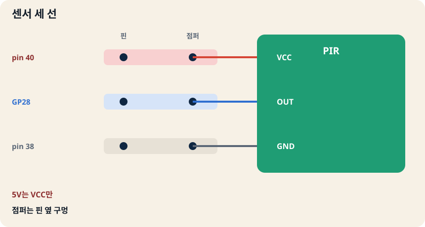

8차시
지나가면 켜지고, 지나가면 삑
버튼을 빼고 인체 감지 센서를 넣습니다. 움직임이 있으면 LED가 켜지고, 부저는 그 순간 한 번만 울립니다.
- 센서의 원리
- 연결
- 지나가면 불
- 한 번만 삑
01
원리
원리이 센서는 사람 몸에서 나오는 적외선이 변할 때 1을 보냅니다. 가만히 있으면 잠시 뒤 0으로 돌아옵니다. 값은 버튼처럼 0 또는 1이고, 핀만 다릅니다. 기판의 다이얼 하나는 감도, 하나는 켜져 있는 시간입니다.
02
연결
USB를 뽑습니다. 버튼과 버튼의 3V3 선을 먼저 뺍니다. LED와 부저는 남겨 둡니다. 기판 글자 VCC, OUT, GND를 읽습니다.

| 센서 글자 | 피코 |
|---|---|
| VCC | VBUS, 핀 40. 5V |
| OUT | GP28, 핀 34 |
| GND | 아무 GND. 핀 38이 가깝습니다 |
5V는 센서 VCC에만. 핀 40 선이 GP 핀이나 부저, LED에 닿으면 안 됩니다. 센서는 암-수 점퍼로 연결합니다.
03
불
실행 뒤 1분 정도 센서가 안정될 수 있습니다. 종이컵으로 덮고 컵 안에 손만 넣었다 뺍니다.
pir_light.py
from machine import Pin
import time
led = Pin(14, Pin.OUT)
pir = Pin(28, Pin.IN, Pin.PULL_DOWN)
while True:
if pir.value() == 1:
led.on()
else:
led.off()
time.sleep(0.1)
손을 뺀 뒤에도 불이 잠시 켜져 있으면 감지 유지 시간입니다. 너무 길면 다이얼을 가장 짧게 돌립니다. 수업 전에 짧게 맞춰 두면 좋습니다.
04
삑
사람이 계속 있어도 부저가 계속 울리면 시끄럽습니다. 0에서 1로 바뀌는 순간만 0.1초 울립니다.
pir_beep.py
from machine import Pin
import time
led = Pin(14, Pin.OUT)
buzzer = Pin(13, Pin.OUT)
pir = Pin(28, Pin.IN, Pin.PULL_DOWN)
before = 0
while True:
now = pir.value()
if now == 1 and before == 0:
buzzer.on()
time.sleep(0.1)
buzzer.off()
if now == 1:
led.on()
else:
led.off()
before = now
time.sleep(0.05)
막히면
- 전원 직후 혼자 켜졌다 꺼짐 → 1분 정도 기다립니다.
- 한 번 켜지면 몇 분째 안 꺼짐 → 유지 시간 다이얼을 최소로 돌립니다.
- 아무도 없는데 켜짐 → 종이컵으로 덮습니다.